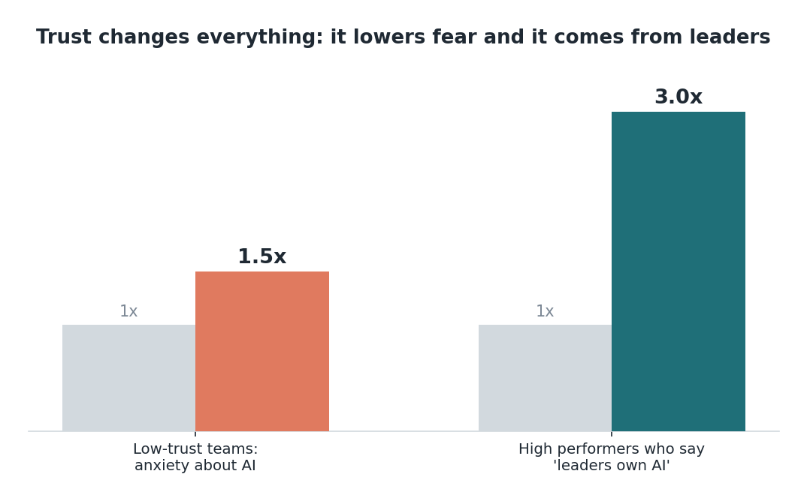

Edisi 7 — Human-in-the-loop: tetap ada yang bertanggung jawab, tanpa kehilangan kendali
Saat pertama kali tim kami melihat agent bikin draft satu batch appeal, ruangannya jadi hening, terus pertanyaan yang sebenarnya muncul: "Kalau mesinnya yang kerja, siapa yang tanggung jawab kalau salah?" Saya senang itu diucapkan keras-keras. Karena jawabannya bukan angkat bahu — itu seluruh desainnya, dan begitu kamu lihat, itu bikin lega.
Kamu yang tanggung jawab, dan sistemnya memang dirancang supaya kamu bisa begitu. Agent mengusulkan; manusia me-review; manusia menyetujui; baru setelah itu tindakannya jalan. Agent nggak pernah ambil langkah terakhir sendirian. Dia bikin draft appeal yang kamu kirim, siapkan entry yang kamu post. Tanggung jawab nggak pindah ke mesin, karena mesin nggak pernah pegang keputusan akhir.

Oversight itu bukan rem — itu yang bikin mesinnya bisa dipakai. Kadang gampang dengar "human-in-the-loop" sebagai hambatan yang bikin alat cepat jadi lambat. Coba lihat dari sisi lain: itu justru yang bikin kita bisa pakai alat secepat itu sama sekali. Di rumah sakit, kecepatan agent tanpa langkah review bakal bikin ngeri; dengan langkah itu, kecepatannya jadi aman, karena setiap tindakan yang berdampak tetap lewat satu meja tempat orang bisa nangkep apa yang kelewat sama mesin. Dan agent-nya sendiri diatur sebagai sebuah identitas — bernama, least-privilege, log penuh — jadi kita selalu bisa tunjukkan persis apa yang dilihat dan dilakukan agent, berdampingan dengan apa yang diputuskan manusia. Jejak itu melindungi orang yang kerja dengan niat baik, sama seperti melindungi pasien.
Ini juga titik di mana trust jadi bisa diukur. Tim dengan trust rendah sekitar 1,5x lebih cemas soal AI, dan karyawan di organisasi berkinerja tinggi sekitar 3x lebih mungkin bilang leader mereka yang memegang agenda AI-nya. Pengungkit yang menggerakkan kedua angka ini adalah oversight yang kelihatan jelas. Waktu orang bisa lihat langkah review-nya dan pegang langsung, rasa takutnya ada tempat untuk mereda — dan kecemasannya menurun, bukan karena kita bilang "jangan khawatir," tapi karena mereka bisa lihat sendiri guardrail-nya.

Ada tugas kepemimpinan di balik data itu, khususnya buat manajer. Trust nggak membangun dirinya sendiri; itu datang dari leader yang secara kelihatan memegang perubahannya dan mengulang, dengan bahasa yang jelas, bahwa manusia tetap yang memutuskan. Perilaku itu biayanya kebanyakan cuma perhatian, dan itu hal dengan leverage tertinggi yang bisa dilakukan seorang leader di program agent. Kalau tetap hands-off, memperlakukannya cuma sebagai rollout IT, deployment yang secara teknis bagus pun jadi kurang maksimal karena kecemasannya nggak hilang-hilang.
Jadi buat pertanyaan diam-diam itu — siapa yang tanggung jawab? — jawaban yang hangat dan jelas adalah: tetap kamu, dan semuanya dirancang supaya kamu bisa begitu. Agent yang mengerjakan; kamu yang pegang judgment, tanggung jawab, dan klik terakhir. Itu belum berubah, dan kita nggak akan mengubahnya. Memahami itu yang mengubah kekhawatiran di dada jadi keyakinan di tangan.
Sumber
- Trust dan kecemasan (~1,5x; ~3x) — McKinsey, "How to close the agentic adoption gap" (7 Agustus 2026).
- Guardrail identitas agent; ~88%/~22% — accelirate.com.
- Skenario ilustratif Siloam.
Versi lain edisi ini
Ide yang sama, sudut pandang beda. Gaya Cerita (A) → · Data / ROI (B) →